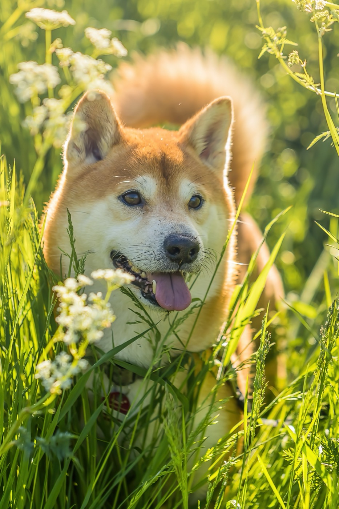
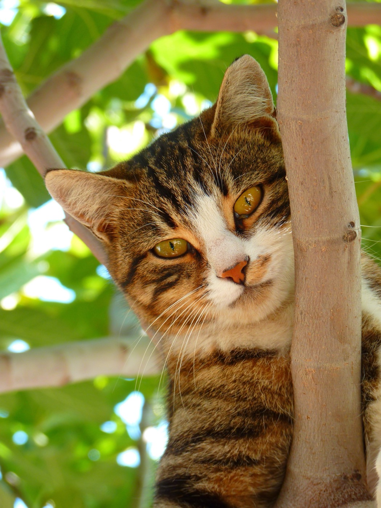
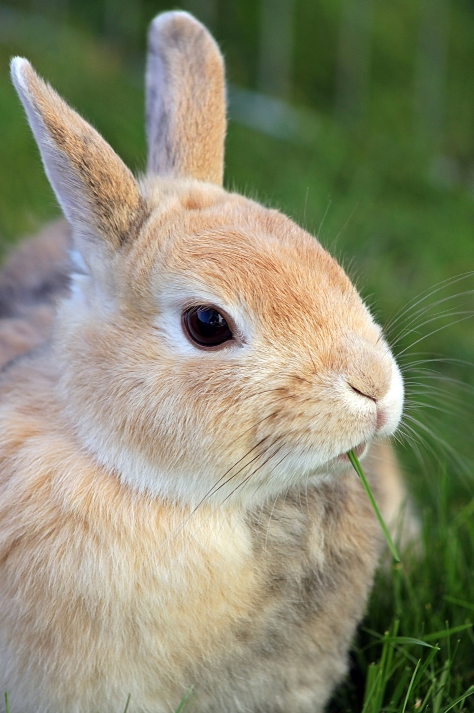

PawConnect for iPhone
Their world.
In your hands.
Care. Connection. A little everyday joy.

UPCOMING
ALL RECORDS

Mochi ♡
@noodlecat
MOCHI’S WORLD

Coco A good day for a little adventure.
Design previews of the upcoming iOS experience. Example content.
ALL THE WAYS YOU LOVE THEM.
One app.
A whole lot of them.
The photos you can’t stop taking. The details you want to remember. The people who understand. Bring their world together in PawConnect.
01 / EVERYDAY CARE
Love is in
the details.
Keep the little things together.
Be there for the big ones.
UPCOMING
ALL RECORDS
TODAY
DOCUMENTS
Design previews · Example records
Their history.
Always handy.
Vaccinations, vet visits, medications and weight logs. Notes, attachments and follow-up dates, all in their health timeline.
Every walk.
Every little routine.
Log walks, play and feeding. Track a walk’s route, distance and duration, and look back on the days you spend together.
Ready for
the next visit.
Keep medical documents in a dedicated vault, close to the health records they belong with.
Scroll to explore
02 / PET IDENTITY
They’re one of a kind.
Make it official.
A name.
A face.
A place of their own.
Give every pet their own profile. Keep their details together, share a digital pet ID, and choose what to show on their recovery page.
03 / COMMUNITY
Your favourite faces.
A place to belong.
For the hundredth photo of them sleeping.
And the people who still want to see it.
A feed that gets you.
Photos, videos and stories. Follow pets you love, give their posts a paw, and connect with the people behind them.
Made for Zoomies.
Short pet videos for the moments that won’t sit still. Discover a little more personality with every scroll.
Keep the conversation going.
Chat with other pet people. Make a connection that carries on beyond the feed.
04 / PAWAI BETA
A little help.
A little closer.
Questions come with caring.
Ask about your pet, add a photo for context, and pick up a past conversation. PawAI brings chat, history and editable pet memories into one place.
A little help
for their world.
Choose your pet.
Ask a question. Add a photo.
Design preview · No generated advice shown
PawAI provides general guidance, not veterinary diagnosis. Review suggested health records before saving.
CLOSER TO HOME
Their next favourite place.
Just around the corner.
Find vets, groomers, shelters and pet-friendly places. Explore local services and curated pet products through PawShop.
A little closer.
Every day.
Their moments. Their care. Their people.
Get PawConnect for iPhone Explore the next PawConnect design. Features may vary by app version.Good to know.
Is PawConnect just for dogs and cats?
No. Pet profiles support multiple species, including birds, fish, reptiles and small mammals.
Can PawAI replace a vet?
No. PawAI is a beta assistant for general guidance. It cannot diagnose your pet or replace veterinary care. Review any suggested record before saving it.
Where can I get help?
Visit our support page or report a problem.